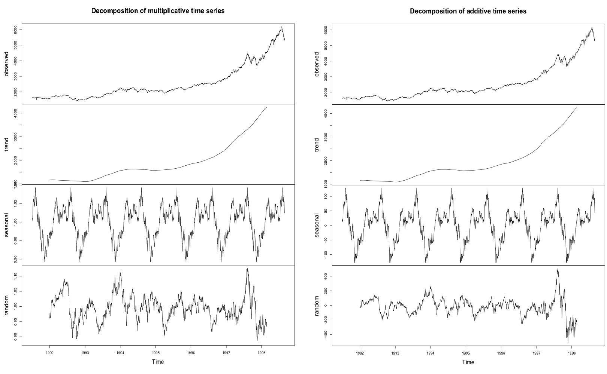
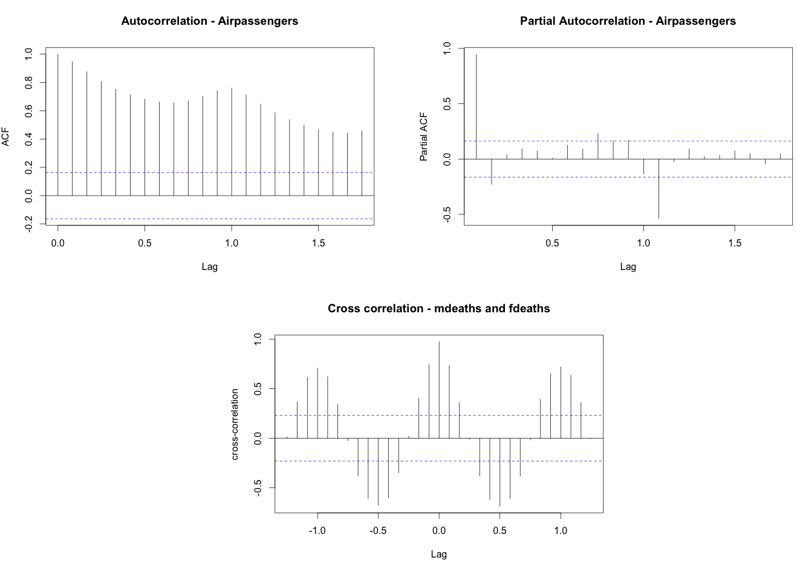
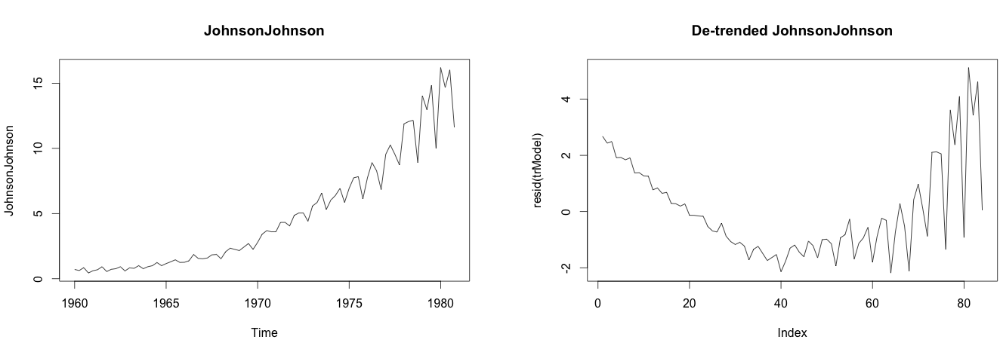
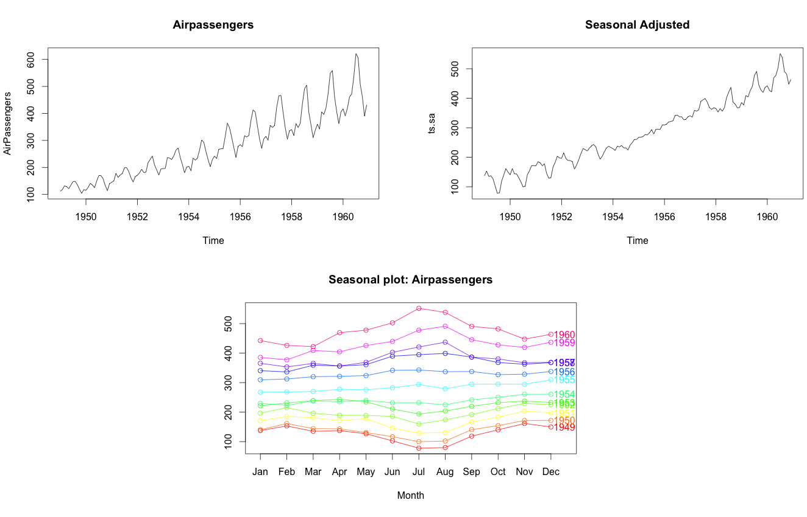
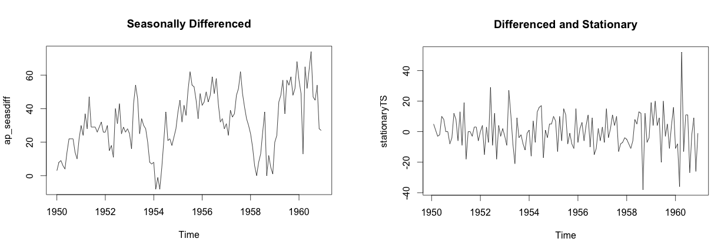

Time Series Analysis
Any metric that is measured over regular time intervals forms a time series. Analysis of time series is commercially importance because of industrial need and relevance especially w.r.t forecasting (demand, sales, supply etc).
A time series can be broken down to its components so as to systematically understand, analyze, model and forecast it. This is a beginners introduction to time series analysis, answering fundamental questions such as:
- What are the components of a time series
- What is a stationary time series
- How to decompose it
- How to de-trend, de-seasonalize a time series
- What is auto correlation etc.
What is a Time Series ?
Any metric that is measured over regular time intervals makes a Time Series. Example: Weather data, Stock prices, Industry forecasts, etc are some of the common ones.
How to create a Time Series in R ?
Upon importing your data into R, use ts() function as follows. The inputData used here is ideally a numeric vector of the class ‘numeric’ or ‘integer’.
ts (inputData, frequency = 4, start = c(1959, 2)) # frequency 4 => Quarterly Data
ts (1:10, frequency = 12, start = 1990) # freq 12 => Monthly data.
ts (inputData, start=c(2009), end=c(2014), frequency=1) # Yearly DataUnderstanding your Time Series
Each data point (Yt) at time t in a Time Series can be expressed as either a sum or a product of 3 components, namely, Seasonality (St), Trend (Tt) and Error (et) (a.k.a White Noise).
For Additive Time Series,
Yt = St + Tt + ϵt
For Multiplicative Time Series,
Yt = St × Tt × ϵt
A multiplicative time series can be converted to additive by taking a log of the time series.
additiveTS <- log (multiplcativeTS) # often converts multiplicative to additive time seriesWhat is a Stationary Time Series ?
A time series is said to be stationary if it holds the following conditions true.
- The mean value of time-series is constant over time, which implies, the trend component is nullified.
- The variance does not increase over time.
- Seasonality effect is minimal.
This means it is devoid of trend or seasonal patterns, which makes it looks like a random white noise irrespective of the observed time interval.
How to extract the trend, seasonality and error?
The decompose() and forecast::stl() splits the time series into seasonality, trend and error components.
tsData <- EuStockMarkets[, 1] # ts data
decomposedRes <- decompose(tsData, type="mult") # use type = "additive" for additive components
plot (decomposedRes) # see plot below
stlRes <- stl(tsData, s.window = "periodic")
#> Few rows of stlRes
#> $time.series
#> Time Series:
#> Start = c(1991, 130)
#> End = c(1998, 169)
#> Frequency = 260
#> seasonal trend remainder
#> 1991.496 43.1900952 1602.604 -17.0445950
#> 1991.500 55.3795008 1603.064 -44.8134914
#> 1991.504 61.2914064 1603.523 -58.3048878
#> 1991.508 68.4470620 1603.983 -51.3900342
#> 1991.512 68.4527176 1604.442 -54.7351806
#> 1991.515 70.8396232 1604.902 -65.1315770
How to create lags of a time-series ?
When the time base is shifted by a given number of periods, a Lag of time series is created. Lags of a time series are often used as explanatory variables to model the actual time series itself. The underlying reasoning is that the state of the time series few periods back may still has an influence on the series current state.
laggedTS <- lag(tsData, 3) # shifted 3 periods earlier. Use `-3` to shift by 3 periods forward.library(DataCombine)
myDf <- as.data.frame(tsData)
myDf <- slide(myDf, "x", NewVar = "xLag1", slideBy = -1) # create lag1 variable
myDf <- slide(myDf, "x", NewVar = "xLead1", slideBy = 1) # create lead1 variable
head(myDf)
#> x xLag1 xLead1
#> 1 1628.75 NA 1613.63
#> 2 1613.63 1628.75 1606.51
#> 3 1606.51 1613.63 1621.04
#> 4 1621.04 1606.51 1618.16
#> 5 1618.16 1621.04 1610.61
#> 6 1610.61 1618.16 1630.75What is Autocorrelation and Partial-Autocorrelation?
Autocorrelation is the correlation of a Time Series with lags of itself. This is a significant metric because, it is used commonly to determine if the time series is stationary or not. A stationary time series will have the autocorrelation fall to zero fairly quickly but for a non-stationary series it drops gradually.
Partial Autocorrelation is the correlation of the time series with a lag of itself, with the linear dependence of all the lags between them removed.
# both acf() and pacf() generates plots by default
acfRes <- acf(AirPassengers) # autocorrelation
pacfRes <- pacf(AirPassengers) # partial autocorrelation
ccfRes <- ccf(mdeaths, fdeaths, ylab = "cross-correlation") # computes cross correlation between 2 timeseries.
head(ccfRes[[1]])
#> [1] 0.01505498 0.36562603 0.61542712 0.70820629 0.62189580 0.34000545
How to de-trend a time series ?
Use linear regression to model the Time Series data with indices. The model residuals will usually be devoid of the trend component. If some trend is left over to be seen in the residuals (like what it seems to be with ‘JohnsonJohnson’ data below), then you might wish to add few predictors to the lm() call (like a seasonal dummy, fourier transform or may be a lag of the series itself), until the trend is filtered.
trModel <- lm(JohnsonJohnson ~ c(1:length(JohnsonJohnson)))
plot(resid(trModel), type="l") # resid(trModel) contains the de-trended series.
How to de-seasonalize a time series in R?
De-seasonalizing throws insight about the effects seasonal pattern in the time series and helps to model the data without the seasonal effects, which can later be customized. Step 1: De-compose the Time series using stl() Step 2: use seasadj() from ‘forecast’ package
library(forecast)
ts.stl <- stl(TS,"periodic") # decompose the TS
ts.sa <- seasadj(ts.stl) # de-seasonalize
plot(AirPassengers, type="l") # original series
plot(ts.sa, type="l") # seasonal adjusted
seasonplot(ts.sa, 12, col=rainbow(12), year.labels=TRUE, main="Seasonal plot: Airpassengers") # seasonal frequency set as 12 for monthly data.
How to test if a time series is stationary?
Use Augmented Dickey-Fuller Test (adf test). A p-Value of less than 0.05 in adf.test() indicates that it is stationary.
library(tseries)
adf.test(tsData) # p-value < 0.05 indicates the TS is stationary
kpss.test(tsData)How to make a time series stationary?
Differencing a time series means, to subtract each data point in the series from its successor. It is commonly used to make a time series stationary. For most time series patterns, 1 or 2 differencing is necessary to make it a stationary series.
But if the time series appears to be seasonal, a better approach is to difference with respective season’s data points to remove seasonal effect. After that, if needed, difference it again with successive data points. But, How to know how many differencing is needed? the nsdiffs and ndiffs from forecast package can help find out how many seasonal differencing and regular differencing respectively is needed to make the series stationary.
# Seasonal Differencing
nsdiffs(AirPassengers) # number for seasonal differencing needed
#> 1
AirPassengers_seasdiff <- diff(AirPassengers, lag=frequency(AirPassengers), differences=1) # seasonal differencing
plot(ap_seasdiff, type="l", main="Seasonally Differenced") # still not stationary!
# Make it stationary
ndiffs(AirPassengers_seasdiff) # number of differences need to make it stationary
#> 1
stationaryTS <- diff(AirPassengers_seasdiff, differences= 1)
plot(stationaryTS, type="l", main="Differenced and Stationary") # appears to be stationary